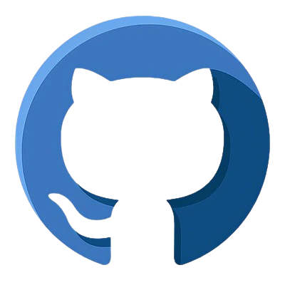

Gestionnaire de mots de passe local — Rust
Développement d'une application de bureau de type coffre-fort numérique permettant de stocker localement des identifiants de manière chiffrée.
Le projet utilise notamment Argon2id pour la dérivation de clé, AES-256-GCM pour le chiffrement et un serveur HTTP local permettant la communication avec une extension navigateur.
- Rust
- egui / eframe
- Argon2id
- AES-256-GCM
- Axum
- Tokio
